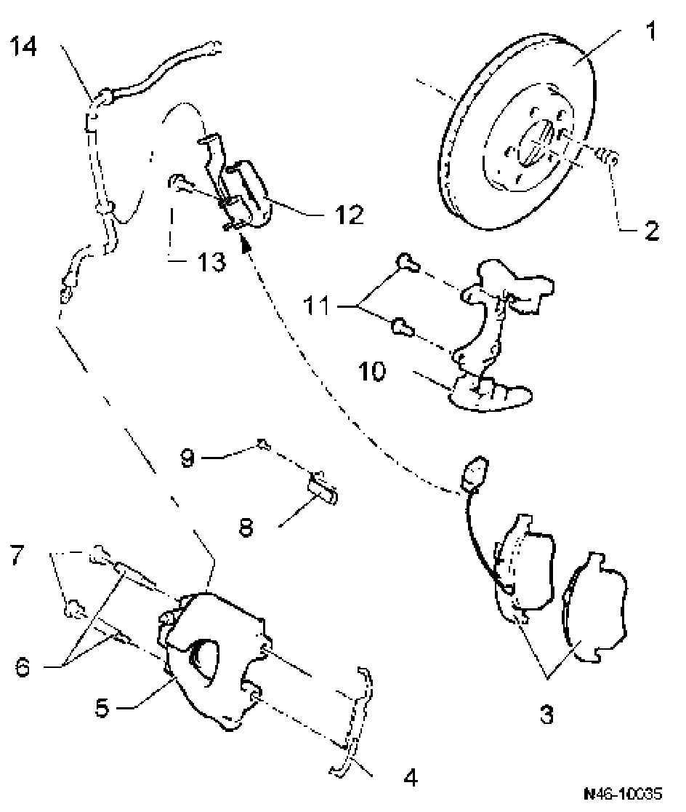

Front
Front brakes, servicing
Front brakes, FN 3 (16") calipers, servicing
Note:
^ After replacing brake pads, depress brake pedal firmly several times with vehicle stationary so that the brake pads are properly seated in their normal operating position.
^ To siphon off brake fluid from the brake fluid reservoir, use the brake filler and bleeder unit VAS5234.
^ Before removing a brake caliper or disconnecting a brake hose, the brake pedal loading device V.A.G 1869/2 should be installed (to relieve pressure).

1. Brake disc
^ Ventilated brake disc: diameter 308 mm
^ Brake disc thickness: 29.5 mm
^ Wear limit: 25.5 mm
^ Always replace both sides
^ Remove brake caliper and carrier prior to removing
2. Installed bolt, 15 Nm
^ Brake disc to wheel bearing housing
3. Brake pads
^ Thickness 11.5 mm not including backing plate
^ Wear limit: 2 mm not including backing plate
^ With wear indicator
^ When wear limit is reached (limit: approximately 4 mm) warning lamp lights up on dash panel
^ Checking thickness
go to Maintenance
^ Always replace both sides
^ Removing and installing go to Brake pad: Service and Repair
4. Retaining spring
^ Press under carrier and insert into both bores of brake caliper
5. Brake caliper
^ Do not disconnect brake lines to replace brake pads or brake discs
^ Removing and installing go to Brake caliper: Service and Repair
6. Guide pins, 30 Nm
7. Cap
8. Retainer for brake pad wear indicator wiring
9. Bolt, 10 Nm
10. Carrier
^ Bolt to wheel bearing housing
11. Hexbolt, 270 Nm
^ Always replace
12. Bracket
13. Hex socket head bolt, 9 Nm
14. Brake line, 14 Nm
^ Connect to brake caliper
^ Do not disconnect brake lines to replace brake pads or brake discs